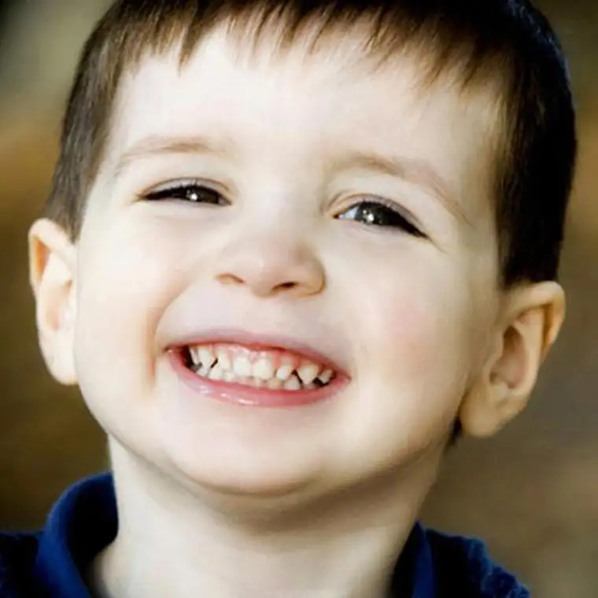

I don’t have her permission to use the little video clip, so I’ll just have to describe it.
It came from a mother of six who’d just learned of a seventh child on the way. The clip was her husband telling the kids, all lined up on the couch, that they were going to have another brother or sister.
Now, if you’ve ever had the pleasure of sharing such news with your own children, you know the kind of response that follows. It happened every single time we shared news of another sibling with our already-born kids. Every single time, even when we thought another reaction might happen instead.
It looked something like this:

Just multiply that by the number of kids. Each additional child will only increase the happy quotient at such an announcement.
Why is this so? And what can we learn from it?
In the above-described video clip, the siblings were visibly ecstatic at the news, raising their hands in the air and jumping up and down. The oldest proclaimed that he just knew it, because he’d sensed that someone had been missing. Something wasn’t complete. But this news? This was the bomb! Now the missing piece would be introduced, and the family would be more whole. Incredibly precious.
The clip made me wish that I’d had a video camera at our announcements to our children regarding forthcoming siblings. There was something so pure, so incredibly beautiful, about those moments when we announced a forthcoming sibling. The kids knew. They just knew that this was GOOD news and to be celebrated. There was no other thought, at all. So honest. So raw. So real.
When I think of our own kids’ reactions, I can only think that this is how God reacts, too. “Let the little children come onto me,” God said. He said this because children do not carry the baggage the rest of us do. Their responses are less cluttered, less weighed down. Kids do not immediately go to the “red zone,” thinking of how a new child will complicate the world and their own lives. No. They go straight to the reality that a brand-new soul that never before existed — and never will again — is on its way into their world — in fact already exists. This is an incredible reality and kids just know it.
We are the ones who complicate things. We are the ones who hem and haw and weigh and measure.
But what if we were to return to the source of who we are? What if we were to think like children when we hear of another soul piercing the veil from nothing into something? From non-being to being? From lifeless to living? What then?
Kids have a beautiful simplicity about them, and I think one of the reasons God wants them to come to him, and us, unhindered is because he knows they have a lot to teach us. And to me, this is one of the most beautiful lessons children have to offer us adults — the gift of reminding us that we are all, every last one of us, masterpieces.
It is so simple, and kids just get it. They just do. And if we could only pay attention to them, so much would change.
As our family grew, announcing another child became more difficult. Well-meaning friends and even family didn’t always have this pure response that our own children had. I began to dread telling others outside of our family. And I began wanting to always start with our kids. I knew that their reception of the news would hearten me, no matter what, and I wanted THAT response — one like God’s — to be the first response. If I could just get that one, pure, loving, embracing response, I could deal with whatever else would come.
And trust me, it’s hard to watch the disconcerted responses from those who have lost the perspective children, and God, have.
I want to remember those moments. One is burned into my memory. I recall where we where, and my true surprise at just how thrilled the kids were. At that time, there were a lot of unknowns in our life, and yet the kids reminded me that one thing was clear: this was wonderful news!
We all deserve a welcome like that; like the kind children offer one another, and that God offers us.
We all need to remember the pure reaction of a child who learns the world just got a notch better because a brand-new possibility has just become manifest in their mind, and is already manifest in reality.
Joy to the world, a child has come. Let earth, embrace each one.